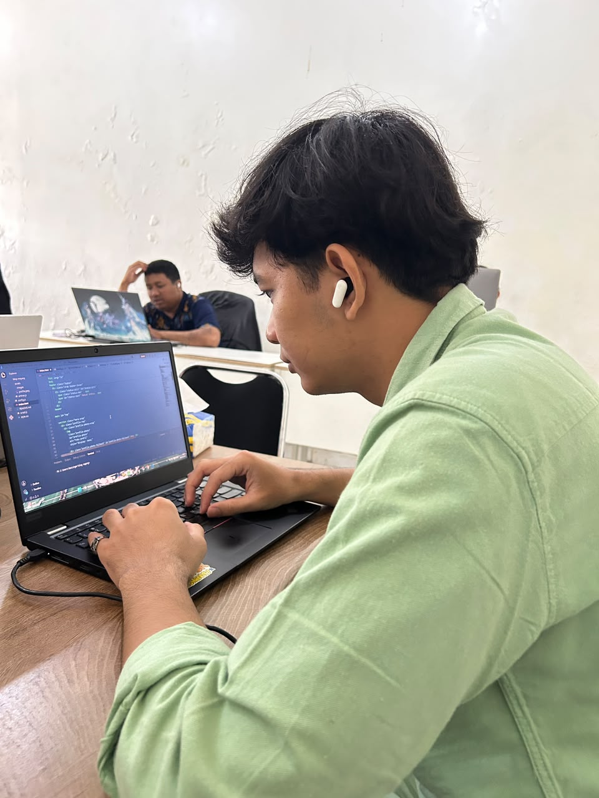
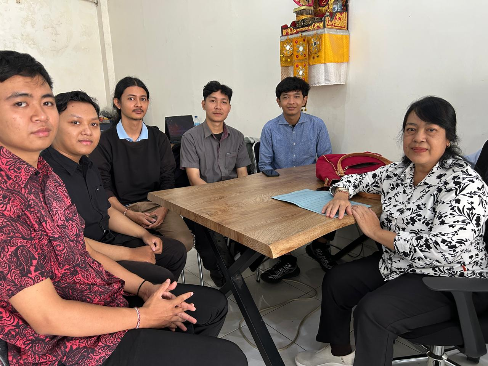

Jurnal magang di
Laksita Emi Saguna
Jurnal harian selama magang industri di PT Laksita Emi Saguna, sebuah startup pengembangan perangkat lunak dan konsultan IT di Denpasar.
0
Minggu tercatat
—
Minggu magang
—
Hari terlaksana
—
Hari tersisa
0% magang selesai
Jurnal Mingguan
Klik sebuah minggu untuk membaca kegiatannya.
Dokumentasi kegiatan

9 September 2026
Melakukan testing untuk project Laksita

18 September 2026